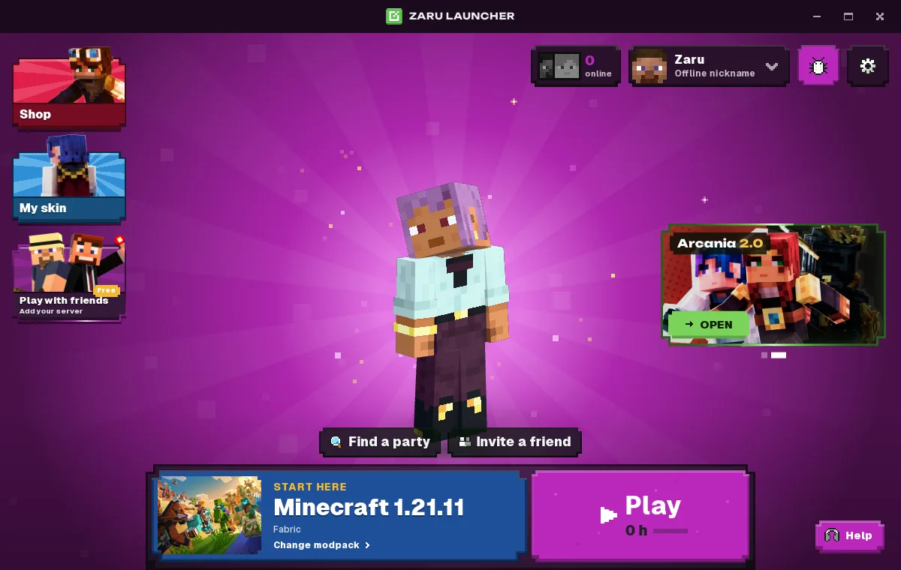
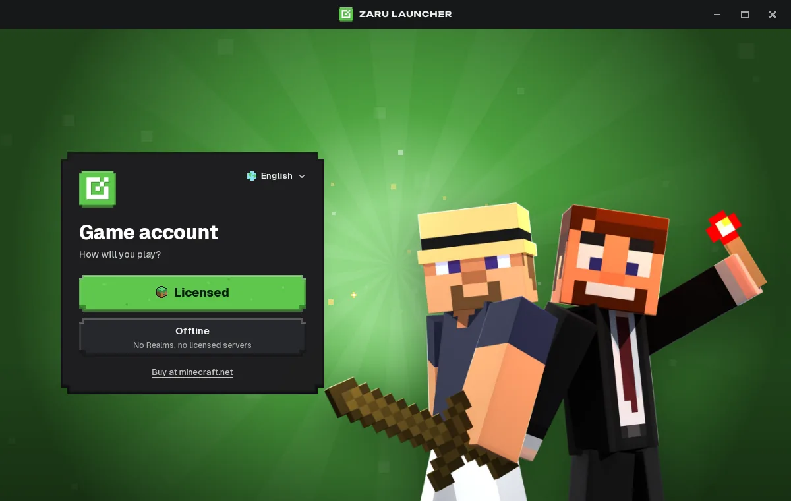
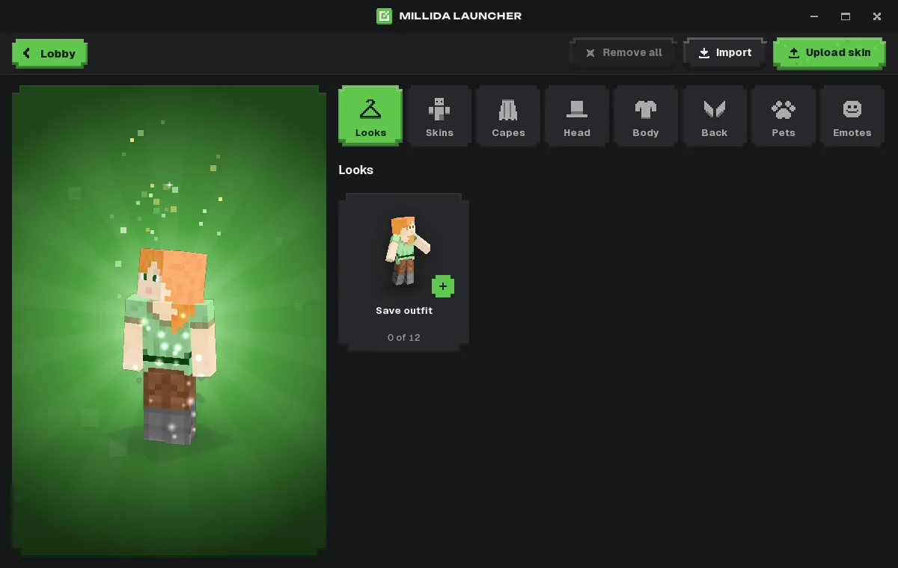
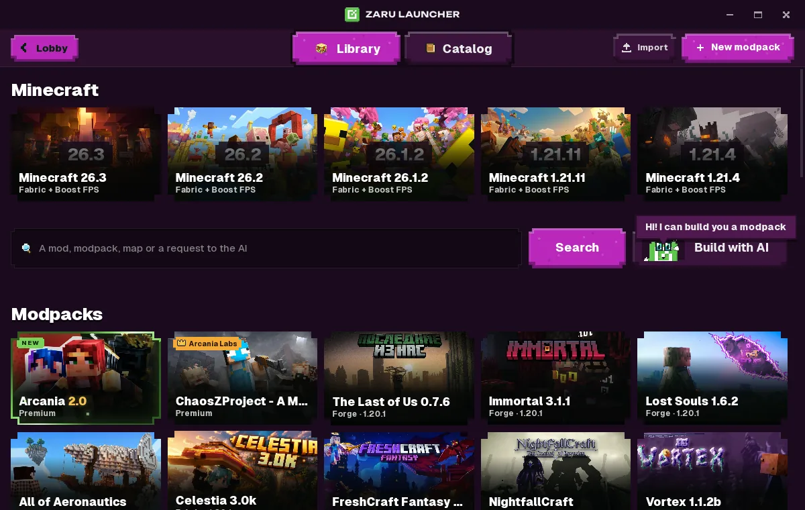

A game account, then Play.
The first screen asks how you will play. A licensed account uses Microsoft’s own device login. A nickname is enough for offline play. The password is typed on Microsoft’s site, not in Zaru.
Zaru Launcher fetches Java, the game, and a Fabric starter pack when you press Play. Use a Microsoft account if you own the game, or a nickname if you do not.
Start here · Minecraft 1.21.11 · Fabric
PlayJava comes with it
These are the Linux build, version 99.0.0, on a fresh start. The window is 1200 by 760.




Open the app, choose how you will play, and press Play. This is the Millida launcher, renamed and built for friends on Windows and Linux.
The first screen asks how you will play. A licensed account uses Microsoft’s own device login. A nickname is enough for offline play. The password is typed on Microsoft’s site, not in Zaru.
The default instance is Minecraft 1.21.11 on Fabric, with Sodium, Lithium, ImmediatelyFast, Entity Culling, More Culling, and Dynamic FPS already in the pack.
Browse mods and modpacks, change a skin, and invite people from the lobby. Friends, the wardrobe, and Millida’s own servers use their account when you want those.
You do not install Java yourself. Press Play and the launcher brings the runtime, libraries, and game files down before the world opens.
Pick one on the first screen. You can add the other later.
Version 99.0.0 for 64-bit Windows and Debian-based Linux. macOS is not in this build.
Zaru.Launcher_99.0.0_x64-setup.exe
About 57 MB
Zaru.Launcher_99.0.0_amd64.deb
About 62 MB · Ubuntu and Debian
Step 1
Download the file for your system.
Step 2
If the browser wraps it in a zip, unzip that first.
Step 3
Windows: run the setup exe. Linux: install the .deb, then open Zaru Launcher.
Step 4
Choose a nickname or Microsoft, then Play. The first launch downloads the game.
This installer is not code-signed. If Windows says it protected your PC, choose More info, then Run anyway. That warning is expected on this personal build.
Yes. This download has no price and the installer does not add a second app.
Not to open a local world. A nickname starts the game. Official multiplayer and Realms need a real Microsoft account that owns Minecraft.
No. Play downloads the Java build the game needs.
No. Zaru is a personal build of the open-source Millida launcher (GPL-3.0). Millida did not make this build and does not support it. It is not affiliated with Mojang or Microsoft. Minecraft is a trademark of Mojang.
This release is Windows and Linux only.